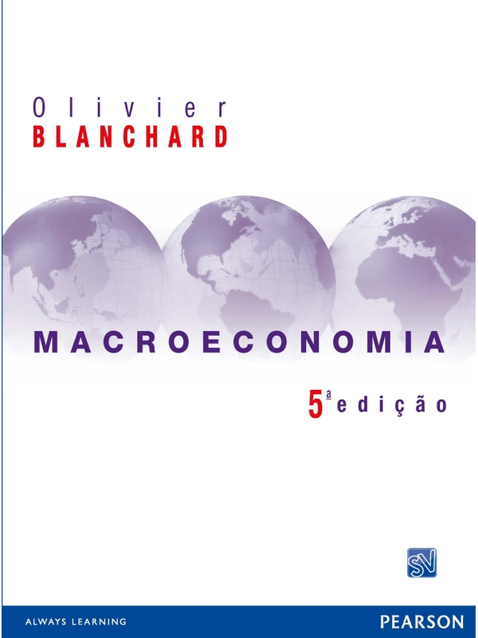

Conhecimento em movimento
Uma biblioteca.
Muitos caminhos.
Livros, experimentos e pesquisas. Um acervo para conectar ideias e transformar o estudo em descoberta.

Em destaque · revista interativaMacroeconomia,
Macroeconomia,
em perspectiva.
24 capítulos, fórmulas e laboratórios para explorar a economia.
Abrir a revista ↗35 materiais para explorar
Bank Valuation & Value-Based Management
Explorar materialAnálise de Sobrevivência Aplicada
Explorar materialCálculo Financeiro das Tesourarias
Explorar materialCausal Inference: The Mixtape
Explorar materialCredit Risk Analytics
Explorar materialCredit-Risk Modelling
Explorar materialEconometria de Séries Temporais
Explorar materialApplied Macroeconometrics
Explorar materialMarket Risk and Financial Markets Modeling
Explorar materialMacroLab Fusion — Terminal Quantitativo de Política Monetária, Banking & IFRS 9
Explorar materialBanking Spread Lab v10 | Unicred Light & Dark · Margem, Spread & Stress Testing
Explorar materialTS·Lab — Plataforma Visual de Séries Temporais: Cluster, Modelos e Benchmark
Explorar materialAtlas de Modelagem Estatística Bancária — Da Regressão a AI Risk Banking
Explorar materialVelocidade e aceleração do risco · explicação para negócios
Explorar materialSegunda derivada numérica · detecção do cotovelo
Explorar materialTDWI Analytics Maturity Model — Interativo | by Gabriel Groehs
Explorar materialLLM Engineer Archtetures — Gabriel Groehs
Explorar materialArquitetura AI & Risk Engineering — Canvas Compacto | Unicred
Explorar materialClaude Code Architecture
Explorar materialEcossistema LLM para Risco de Crédito
Explorar materialEcossistema LLM para Risco de Crédito — Unicred
Explorar materialEngineering Architecture Atlas — Gabriel Groehs
Explorar materialLLM Conceitos — by Groehs
Explorar materialmkdocs-storyteller — The Documentation Studio Kit
Explorar materialDatabricks Learning Lab
Explorar materialSQL Lakehouse Lab — Databricks para Data Product Owners
Explorar material500 Palavras Anglo-Saxãs em Inglês
Explorar materialShort-Term Load Forecasting in AMI Networks | Interactive Article
Explorar materialPrevisão de Carga Elétrica | SARIMAX vs LSTM | Computer 2026
Explorar materialPrevisão de Séries Temporais de Consumo Industrial — SARIMAX vs LSTM vs Bi-GRU
Explorar materialQualificação · Previsão horária do consumo industrial de energia elétrica, Gabriel Alberto Groehs
Explorar materialRSL — PD/ECL sob IFRS 9 | ANPEC SUL 2026
Explorar materialElectricity Load Forecasting — Systematic Literature Mapping | SEPOC 2025
Explorar materialTCC MBA USP/ESALQ — Previsão Ações Bancos B3
Explorar materialNenhum material encontrado.
Experimente outro assunto ou veja o acervo completo.